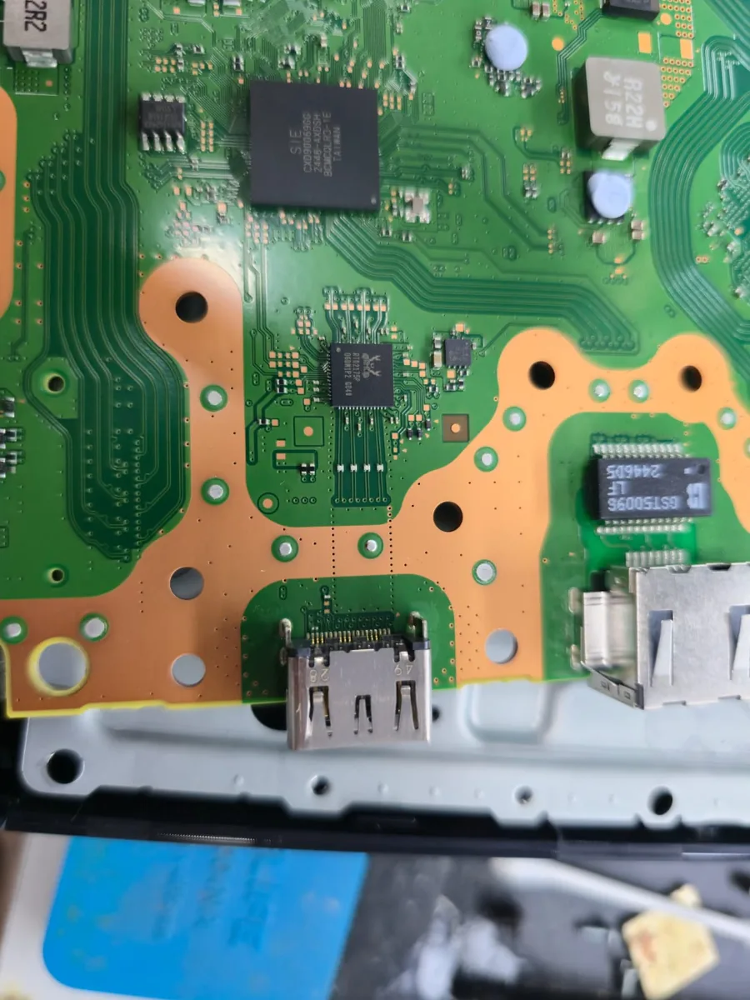
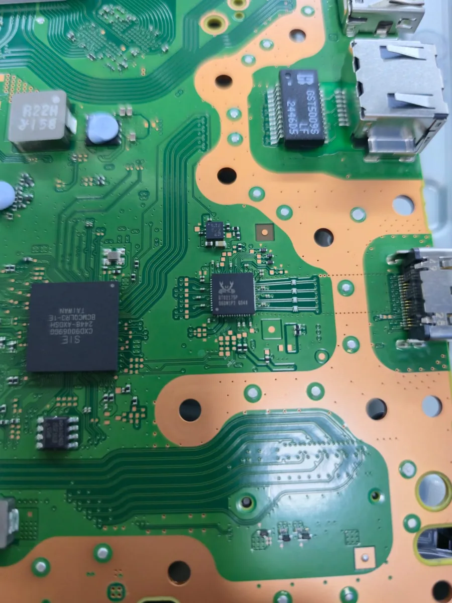
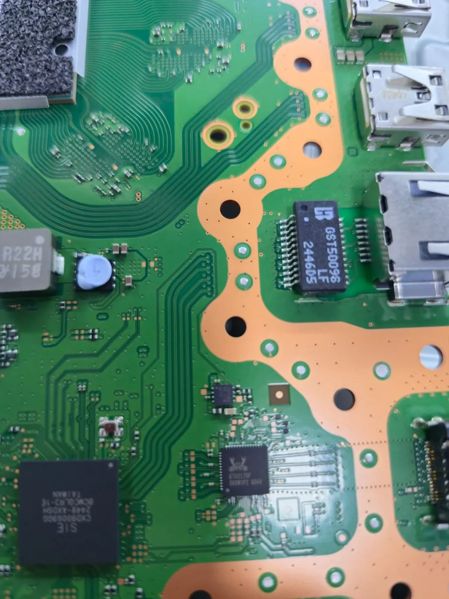

Cómo instalar la interposer en el PS5 Slim
Paso a paso para cambiar el chip HDMI Realtek RTD2175P por el Nuvoton/Panasonic MN864739 con la Interposer Tech MeoW y PS5 HDMI Tool.
Para quién es esta guía. Técnicos de nivel avanzado en banco de trabajo y microsoldadura. No enseña técnicas de retrabajo y no es un tutorial de introducción a la soldadura. Sin la preparación de abajo, el riesgo de pérdida total de la placa madre es alto.
- Experiencia en microsoldadura SMD/QFN, con aire caliente y cautín de precisión.
- Conocimiento en lectura y grabación de NOR SPI: programador CH341A, dumps y respaldo antes de grabar.
- Banco con protección ESD, buena iluminación y microscopio o lupa.
- La propia Interposer Tech MeoW: está hecha para este encaje, y no se puede improvisar la conexión directo en el chip.
Qué hace la interposer
Reemplaza el Realtek RTD2175P original por un MN864739 sin rediseñar las pistas de la placa madre. La cara de abajo tiene el footprint del RTD2175P y se suelda en los mismos pads donde estaba el Realtek. La cara de arriba tiene el footprint del MN864739, donde se suelda el chip nuevo. Los capacitores C1 a C7 y el regulador U1 ya vienen montados.


Pin 1: las dos caras tienen una marca triangular en la misma esquina. Alinea siempre con el indicador de pin 1 del footprint original y con el pin 1 del MN864739. La flecha MN864739 ---> indica el sentido de montaje del chip nuevo.
Por qué importa el regulador de 1,8 V
El MN864739 necesita 0,9 V y 1,8 V. El RTD2175P que reemplaza necesita 0,9 V y 3,3 V, y esa pista de 3,3 V ya existe en la placa. El regulador U1 (TI TLV71318PDBVR) aprovecha esos 3,3 V y los baja localmente a 1,8 V.
Así, la interposer no necesita sacar 1,8 V de otro punto de la placa madre. El chip HDMI es una de las piezas que más fallan en la sección de video del PS5: si los 1,8 V vinieran de otro punto, como el PMIC de la APU (CXD), una sobrecarga tendría camino libre para alcanzar también ese circuito. Con el regulador en la propia pieza, ese camino de falla queda contenido ahí.
El pin EN del regulador está en la pista de 0,9 V: la salida de 1,8 V solo sube cuando los 0,9 V ya están presentes, sin componente externo. Esto coincide con el datasheet de TI: el EN enciende a partir de 0,9 V y apaga por debajo de 0,4 V.
| TLV71318PDBVR (SOT-23-5) | Valor |
|---|---|
| Voltaje de salida | 1,8 V fijo |
| Rango de entrada | 1,4 V a 5,5 V |
| Pin EN, enciende (mínimo) | 0,9 V |
| Pin EN, apaga (máximo) | 0,4 V |
Herramientas e insumos
| Ítem | Para qué | |
|---|---|---|
 | Programador CH341A | Respaldo y grabación de la NOR SPI, antes y después del cambio. |
 | Flux Amtech NC-559 | Retiro del RTD2175P y refusión de la interposer y del MN864739. |
 | Pasta para soldar 183 °C | Aleación de baja temperatura, para no estresar los componentes vecinos. |
 | Aire caliente Sugon 2020D | Retiro y refusión. Perfil según la calibración de tu banco. |
 | Cautín Aifen A9 Pro, punta C210 | Retoques de precisión y limpieza de pads. |
También necesitas la Interposer Tech MeoW, un MN864739 y una computadora con PS5 HDMI Tool.
Dónde está el chip HDMI en la placa del PS5 Slim
El RTD2175P está entre la APU (SIE CXD90069GS) y el conector HDMI, en una zona con bastante cobre expuesto alrededor.




Confirma la marca RTD2175P en el propio chip antes de desoldar. No confíes solo en la posición, sobre todo en una placa que ya fue retrabajada.
Procedimiento
Los pasos alternan software y soldadura. Sigue el orden: grabar la NOR en el momento equivocado es la causa más común de pantalla azul sin video después de la conversión. Los botones aparecen con los nombres que muestra el programa en español.
1. Respaldo de la NOR, antes que nada
- Conecta el CH341A a la NOR, todavía con el RTD2175P original, y abre PS5 HDMI Tool en la pestaña Lector CH341A.
- Haz clic en 1. Detectar lector CH341A y después en 2. Leer NOR. El programa lee dos veces, compara y guarda
DUMP1.binyDUMP2.bin. - Si la lectura no coincide, el programa avisa y no guarda nada: rehaz el contacto del lector antes de seguir.
2. Genera la conversión, todavía sin soldar
- En 3. Aplicar parche (chip HDMI), elige nuvoton y haz clic en Aplicar parche. Ese botón solo prepara el archivo: todavía no graba nada en la placa.
- El programa guarda
REALTEK_FOR_NUVOTON.binjunto al respaldo. Ese es el archivo que grabas después del cambio físico. - Revisa en el registro si el checksum salió como resuelto. Si salió como no resuelto, detente y habla con nosotros antes de seguir con una placa de cliente.
- Todavía no hagas clic en Grabar en la NOR.
3. Retira el RTD2175P
- Protege los componentes vecinos con cinta Kapton.
- Aplica bastante flux sobre el chip y retíralo con aire caliente, con el perfil de tu banco para QFN de paso fino.
- Limpia los pads con el cautín hasta que queden planos y sin exceso de soldadura.
4. Instala la interposer
- Aplica una capa fina de pasta de 183 °C en los pads limpios.
- Coloca la pieza con la cara RTD2175P hacia abajo. El flex es transparente: alinea mirando los pads por debajo y revisa la marca del pin 1.
- Haz la refusión hasta mojar todos los pines. Los agujeritos del flex también permiten soldar por capilaridad con el cautín. Inspecciona: sin puentes y sin pines levantados.
- Deja enfriar antes de manipular.


5. Suelda el MN864739 en la interposer
- Aplica flux y pasta de 183 °C en la cara de arriba.
- Coloca el chip respetando la flecha y la marca del pin 1.
- Haz la refusión con temperatura y flujo de aire más moderados, para no desplazar la pieza ya fijada.
- Retoca pines individuales con el cautín si hace falta.
6. Inspecciona antes de energizar
- Revisa las dos capas de soldadura con aumento: placa con interposer e interposer con MN864739.
- Prueba continuidad y cortos con el multímetro entre pistas vecinas y contra tierra.
7. Graba la NOR convertida y prueba
- Conecta de nuevo el CH341A a la NOR.
- En el programa, usa Cargar archivo .bin para grabar... y selecciona el
REALTEK_FOR_NUVOTON.bindel paso 2. Ese es el archivo correcto, no un respaldo antiguo. - Confirma la grabación (el programa pide doble confirmación y que escribas la palabra
GRAVAR, igual en todos los idiomas) y espera las 4 etapas: verificar, borrar, grabar y comprobar. - Enciende la placa y prueba la salida HDMI.
Problemas comunes
- Sin video, pero la consola enciende normal: sospecha primero de la soldadura (pin frío, puente o chip desplazado) antes de volver a tocar la NOR.
- Se queda en la pantalla azul de verificación: confirma que el checksum de la conversión salió como resuelto para la revisión de Wi-Fi de esta placa.
- El CH341A no detecta la NOR después de soldar: busca un corto o soldadura fría en los pads de la interposer antes de sospechar del programador. Residuos de flux ahí pueden afectar otras líneas de la placa.
Aviso legal
Este procedimiento modifica el hardware, anula la garantía de fábrica de la consola e implica un riesgo real de daño permanente a la placa madre si se hace de forma incorrecta. La pieza y esta documentación se ofrecen sin garantía del resultado del servicio, y quien lo ejecuta responde por su propio trabajo. Esto no quita los derechos que la ley garantiza al consumidor.